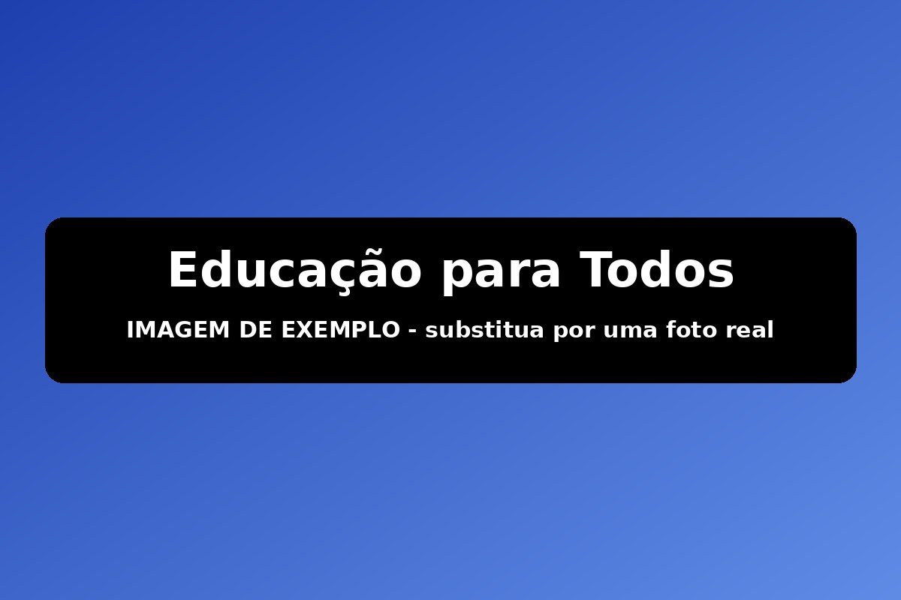
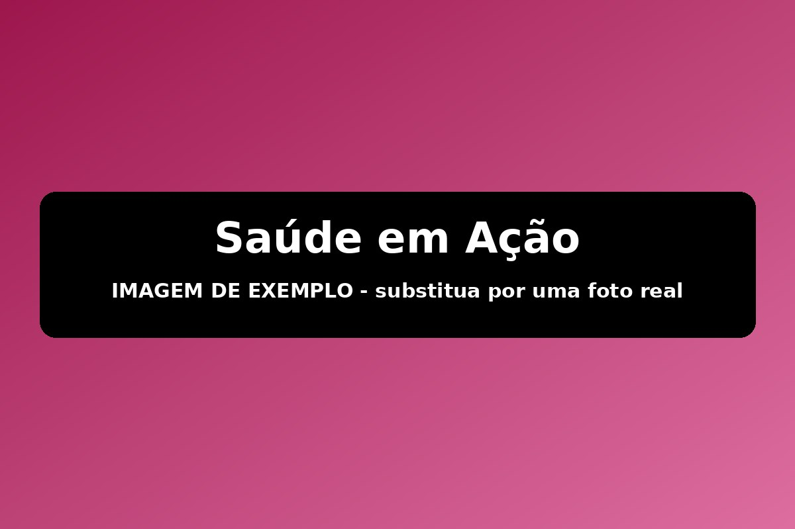
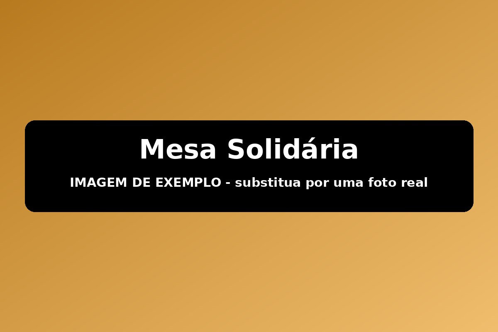
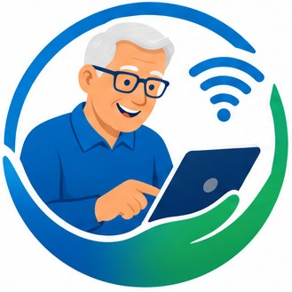
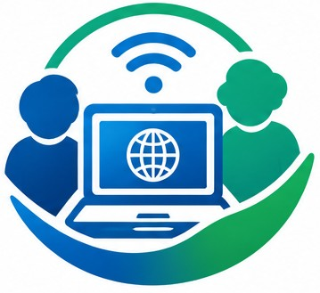

Educação para Todos

Reforço escolar gratuito para crianças e adolescentes em situação de vulnerabilidade, com apoio de voluntários da comunidade.
O Instituto Mãos que Ajudam desenvolve projetos sociais nas áreas de educação, saúde e assistência alimentar, sempre voltados às comunidades em situação de vulnerabilidade de Lajinha e região.

Reforço escolar gratuito para crianças e adolescentes em situação de vulnerabilidade, com apoio de voluntários da comunidade.

Mutirões periódicos de atendimento básico de saúde e orientação, em parceria com profissionais voluntários da região.

Distribuição mensal de cestas básicas para famílias cadastradas em situação de insegurança alimentar.

Você pode contribuir com seu tempo e habilidades para transformar vidas. Veja como participar:

Sua contribuição financeira ajuda a manter nossos projetos ativos e alcançar mais famílias.
Quero contribuir